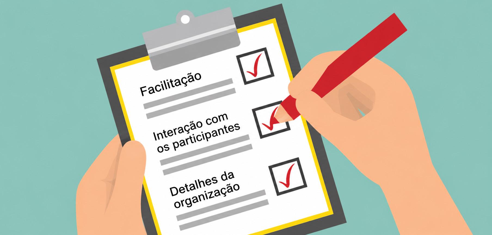

Módulo 3 | Aula 3
Os diálogos deliberativos: definição e desenvolvimento
O grande dia
Após a etapa da organização é chegado o grande dia! Como são muitos detalhes, você pode organizar uma lista de lembretes para ajudá-lo nos principais pontos: facilitação, interação com os participantes e detalhes da organização.

Fonte: Elaborada pelo autor com auxílio de inteligência artificial OpenAI – ChatGPT (2026).
Facilitação
- Apresentar os participantes.
- Introduzir o tema para contextualizar a discussão e engajar os participantes.
- Apresentar os objetivos e expectativas do diálogo sobre políticas.
- Falar as regras logo no início (por exemplo, a "Regra de Chatham House").
- Valorizar o consenso, caso surja espontaneamente.
Interação com os participantes
- Manter um ambiente cordial e amigável (mostrar-se educado e motivador; e ser neutro).
- Envolver os participantes (manter contato visual, garantir a fala de todos e valorizar cada um dos participantes).
- Ouça (acompanhe o fio da conversa, pense rápido e aja oportunamente).
- Intervenha (peça mais detalhes, elucide as divergências de opinião, incentive o uso da linguagem simples, incentive a definição de ações práticas).
Detalhes da organização
- Garantir o devido registro do diálogo deliberativo para embasar o relatório e a devolutiva para todos os participantes e interessados.
- Usar crachás para facilitar a identificação e a comunicação entre os participantes.
- Utilizar placas de sinalização para expressar o desejo de ter a palavra.
- Tornar a participação o mais cômoda possível.
- Contar com um ou dois bons relatores.
- Deixar o material multimídia no ponto para o uso.
O objetivo principal do diálogo não é chegar a um consenso ou tomar uma decisão. Sua realização não garante que formuladores de políticas irão adotar uma abordagem ou opção específica. Do mesmo modo, alguns atores interessados retornarão para suas instituições a fim de definir quais ações adotar.
Os diálogos deliberativos também podem ser realizados de forma online, mantendo os princípios metodológicos adotados nos encontros presenciais: participação equilibrada dos diferentes atores, facilitação imparcial, uso das melhores evidências disponíveis e promoção de um ambiente seguro para a troca de experiências e conhecimentos. Para isso, alguns pontos de atenção adicionais são importantes, como escolha de uma plataforma digital estável, envio prévio de orientações sobre acesso e funcionamento do encontro, realização de testes técnicos antes da atividade e definição de estratégias para garantir a participação ativa de todas as pessoas envolvidas.
Recursos como salas simultâneas, enquetes, chat e compartilhamento de documentos podem favorecer a interação entre os participantes, desde que utilizados para apoiar o processo deliberativo e não substituir o diálogo. Da mesma forma que nos encontros presenciais, recomenda-se registrar adequadamente as informações e respeitar as regras estabelecidas.